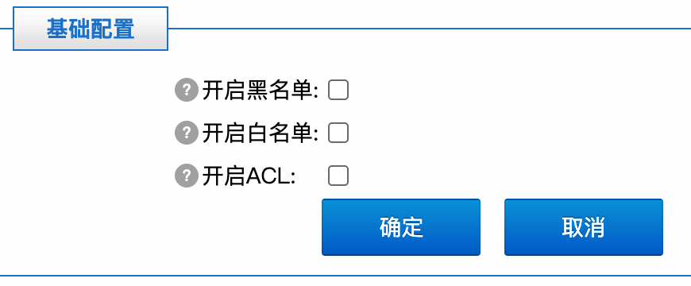

配置路径: "基础配置-安全配置"

说明:
| 黑名单 | 黑名单开启后, 在黑名单内的源IP, 会被拒绝访问(即使其在白名单内也会被拒绝) |
| 白名单 | 白名单开启后, 不在白名单内的源IP, 会被拒绝访问 |
| 白名单 | 权限控制列表, 可以更精细的控制访问权限 |
配置视图： config-view -> xnetc-view
使用示例:
xnetc-view>blacklist enable xnetc-view>whitelist enable xnetc-view>acl enable
命令说明:
| [no] blacklist enable | 关闭/开启黑名单 |
| [no] whitelist enable | 关闭/开启白名单 |
| [no] acl enable | 关闭/开启ACL |